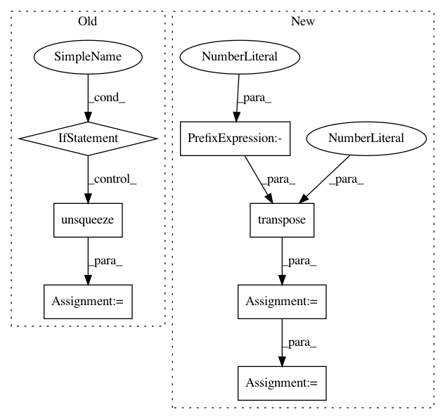

a7a12d157766b69cf4b1ddbb5fcdacfe485dc6fa,test/kernels/test_scale_kernel.py,TestScaleKernel,test_ard_batch,#TestScaleKernel#,44
Before Change
// batch_dims and diag
res = kernel(a, b, batch_dims=(0, 2)).diag()
actual = torch.cat([actual[i].diag().unsqueeze(0) for i in range(actual.size(0))])
self.assertLess(torch.norm(res - actual), 1e-5)
def test_initialize_outputscale(self):
kernel = ScaleKernel(RBFKernel())
After Change
// batch_dims
double_batch_a = scaled_a.unsqueeze(0).transpose(0, -1)
double_batch_b = scaled_b.unsqueeze(0).transpose(0, -1)
actual = double_batch_a.transpose(-1, -2).unsqueeze(-1) - double_batch_b.transpose(-1, -2).unsqueeze(-2)
actual = actual.pow(2).mul_(-0.5).exp().view(3, 2, 2, 2)
actual[:, 1, :, :].mul_(2)
res = kernel(a, b, batch_dims=(0, 2)).evaluate()
self.assertLess(torch.norm(res - actual), 1e-5)
// batch_dims and diag
res = kernel(a, b, batch_dims=(0, 2)).diag()
actual = actual.diagonal(dim1=-2, dim2=-1)
self.assertLess(torch.norm(res - actual), 1e-5)
def test_initialize_outputscale(self):
kernel = ScaleKernel(RBFKernel())
In pattern: SUPERPATTERN
Frequency: 3
Non-data size: 7
Instances
Project Name: cornellius-gp/gpytorch
Commit Name: a7a12d157766b69cf4b1ddbb5fcdacfe485dc6fa
Time: 2019-04-03
Author: gpleiss@gmail.com
File Name: test/kernels/test_scale_kernel.py
Class Name: TestScaleKernel
Method Name: test_ard_batch
Project Name: cornellius-gp/gpytorch
Commit Name: a7a12d157766b69cf4b1ddbb5fcdacfe485dc6fa
Time: 2019-04-03
Author: gpleiss@gmail.com
File Name: test/kernels/test_rbf_kernel.py
Class Name: TestRBFKernel
Method Name: test_ard_batch
Project Name: interactiveaudiolab/nussl
Commit Name: 2ffbfa3a6bd3b8de8e21a762489346054dcd9ccc
Time: 2020-03-12
Author: prem@u.northwestern.edu
File Name: nussl/separation/deep/deep_mask_estimation.py
Class Name: DeepMaskEstimation
Method Name: extract_features